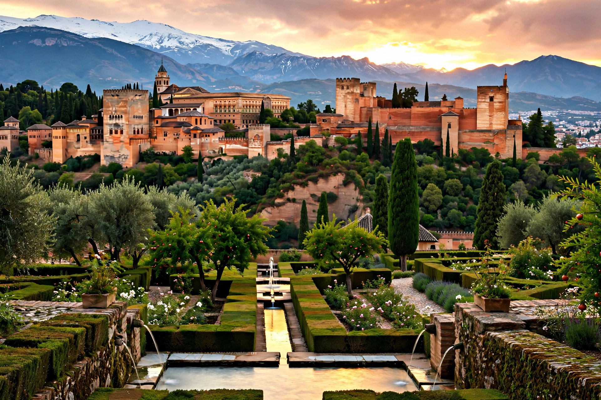

The Emirate of Granada, also known as the Nasrid Kingdom of Granada, was an Islamic emirate established in 1230 by Muhammad ibn al-Ahmar in southern Iberia. Centered on Granada and including at times Almería and Málaga, it was the last Muslim state in the Iberian Peninsula, surviving as a tributary vassal of Castile until its surrender on 2 January 1492.

| Emirate of Granada | |
|---|---|
| Capital | Granada |
| Period | 1230–1492 |
| Dynasty | Nasrid |
| Last ruler | Muhammad XII (Boabdil) |
The Nasrids built the Alhambra palace-city, a masterpiece of Islamic architecture. The emirate balanced tribute payments, diplomacy with Castile, Aragon and North African Marinids, and internal factional strife between clans such as the Abencerrages. The Granada War (1482–1492) ended with the Capitulations of Granada, whose guarantees to Muslims were later revoked, leading to revolts and expulsions.